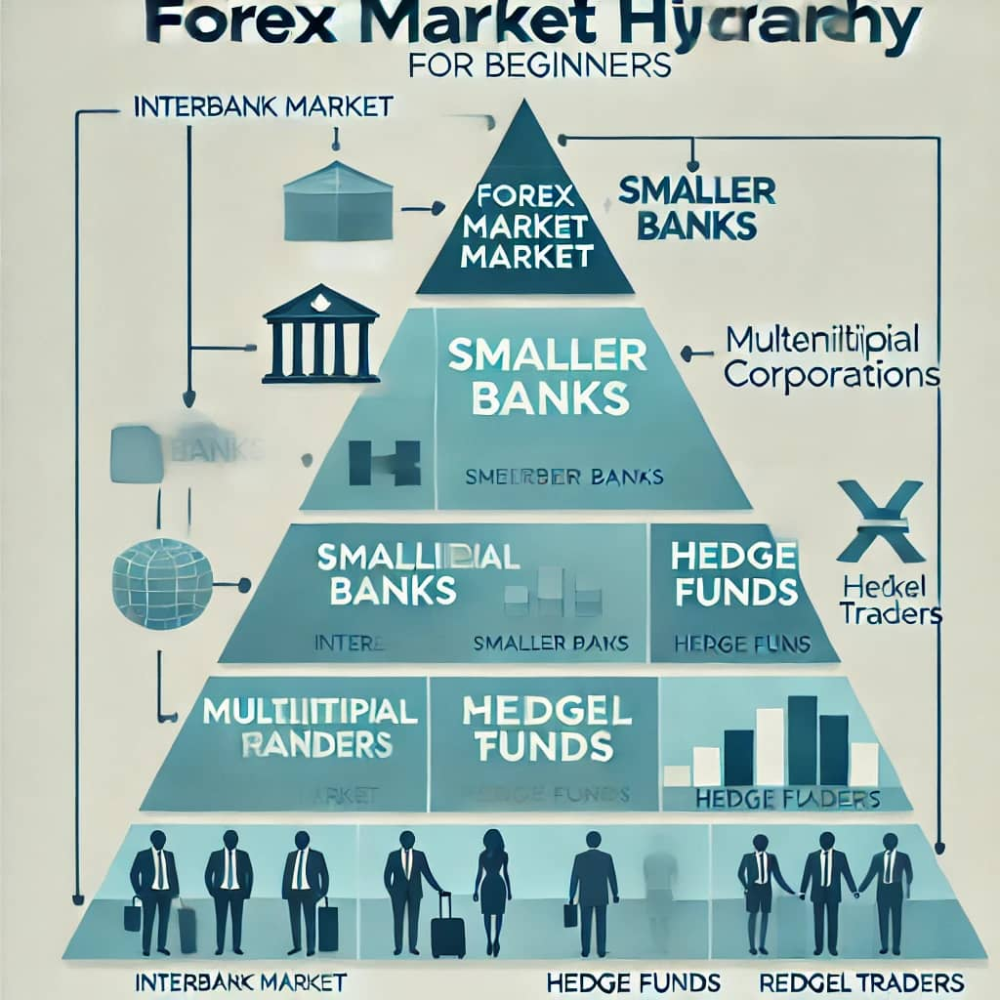

Forex trading, we can also term it as"foreign exchange trading" involves the buying and selling of currencies in a decentralized global market. It's the largest and most liquid financial global market, operating 24 hours a day, five days a week. With the widest daily volume over $8 trillion For beginners, understanding the fundamentals is crucial before diving into trading.
Start by Understanding the Forex Market
The forex market operates over-the-counter (OTC), meaning that there's no centralized exchange of currencies. Transactions occur electronically between participants globally,although the system is decentralised,the forex market has it's guiding hierarchical structure that dictates how traders interact and trade.  Major trading centers include London, New York, Tokyo, and Sydney, allowing continuous trading as markets open and close across different time zones. Understading how the forex market operates can help you to comprehend the flow of trasactions and the various roles performed by different identities within the forex market.
Currency Pairs
Currencies are traded in pairs, representing the value of one currency relative to another. The first currency in the pair is the base currency, and the second is the quote currency. For example, in the GBP/USD pair, GPB is the base currency, and USD is the quote currency. Therefore if the pair is priced at 1.19, it means one pound is equivalent to 1.19 U.S. dollars.
Types of Currency Pairs
Currency Type
Explanation
Examples
Currency
Rate
Major Pairs
These include the most traded currencies
EUR/USD, USD/JPY, GBP/USD, USD/CHF
USD
1.10
Minor Pairs
Currency pairs that don't involve the U.S. dollar but include other major currencies
EUR/GBP, AUD/JPY
EUR
4,100
Exotic Pairs
Pairs that involve a major currency and a currency from a developing or small economy
USD/TRY (U.S. dollar/Turkish lira)
TRY
27.50
Pip:The smallest price move in a currency pair. For most pairs, a pip is 0.0001. For example, if EUR/USD moves from 1.2000 to 1.2001, it has increased by one pip.
Spread: The difference between the bid (selling) price and the ask (buying) price. A lower spread indicates a more liquid market.
Leverage:
Allows traders to control a larger position with a smaller amount of capital. While leverage can amplify profits, it also increases the potential for losses.
Margin: The amount of money required to open a leveraged position. It's a fraction of the trade size and acts as a security deposit.
Getting Started with Forex Trading
Educate Yourself:
Before trading, it's essential to understand the market, terminology, and strategies. Actually of now many online platforms offer comprehensive resources to help beginners grasp the basics. so you can choose which one is better,there are different tutorial live trading videos and lessons whole over internet.
Choose a Reliable Broker:
Select a broker that aligns with your trading needs. As very many brokers can be so convincing to a begginner but Considering your trade needs is to ensetial factors like regulation,customer support,fees and trading platforms.
Open a Demo Account:
Practice trading with virtual money as most trading platforms allow your to open demo accounts with virtual money to familiarize yourself with the platform and test your strategies without risking real capital. Actually once you dont see progress in demo accounts dont dare start a real account.
Develop a Trading Plan:
Outline your trading goals, strategies and risk tolerance. A well-defined plan can help guide your decisions and keep emotions in check. In forex trading failure to provide a well strategic plan is the biggest mistake.
Start Small:
When transitioning to a live account, begin with small trades to manage risk effectively. Then as time grows keep advancing small by small.
Risk Management
Effective risk management is vital in forex trading. Here are some strategies to consider:
Set Stop-Loss Orders:
Determine the maximum amount you're willing to lose on a trade and set a stop-loss order to exit the position if it reaches that level.I suppose 1% loss in most cases.
Use Take-Profit Orders:
Decide in advance the profit level at which you'll close a trade to secure gains.I also suppose 3% profit.
Limit Leverage:
While leverage can increase potential profits, it also increases the rate of loosing. Use leverage cautiously and understand its implications.keeping in mind in forex understanding is the key to success.
Diversify:
Avoid putting all your capital into a single trade or currency pair. Diversifying can help spread risk.
Common Trading Strategies
Day Trading:
Involves opening and closing positions within the same trading day to capitalize on short-term market movements.
Swing Trading:
Traders hold positions for several days or weeks, aiming to profit from expected price moves.
Scalping:
A strategy that focuses on making small profits from numerous trades throughout the day.
Position Trading:
Involves holding positions for an extended period, from weeks to months, based on long-term market trends.